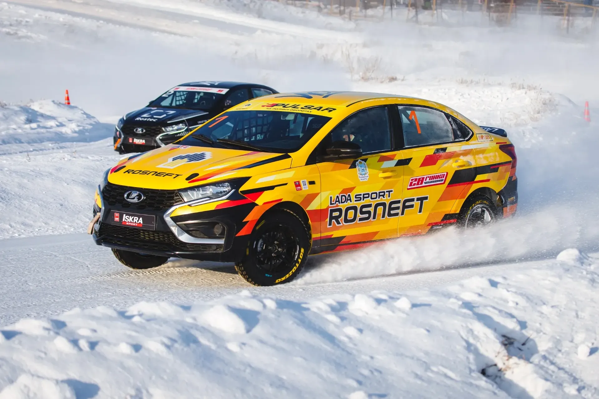
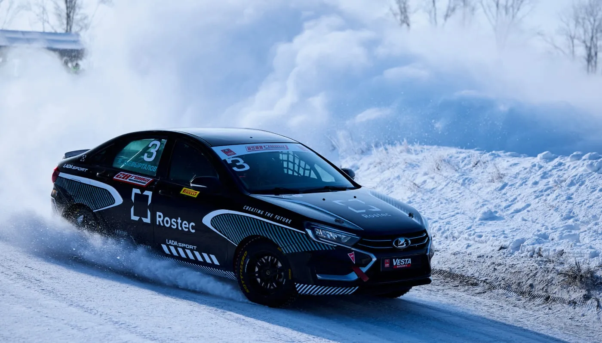
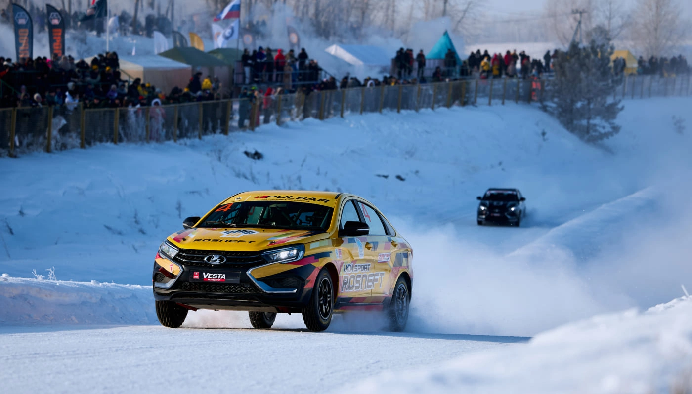
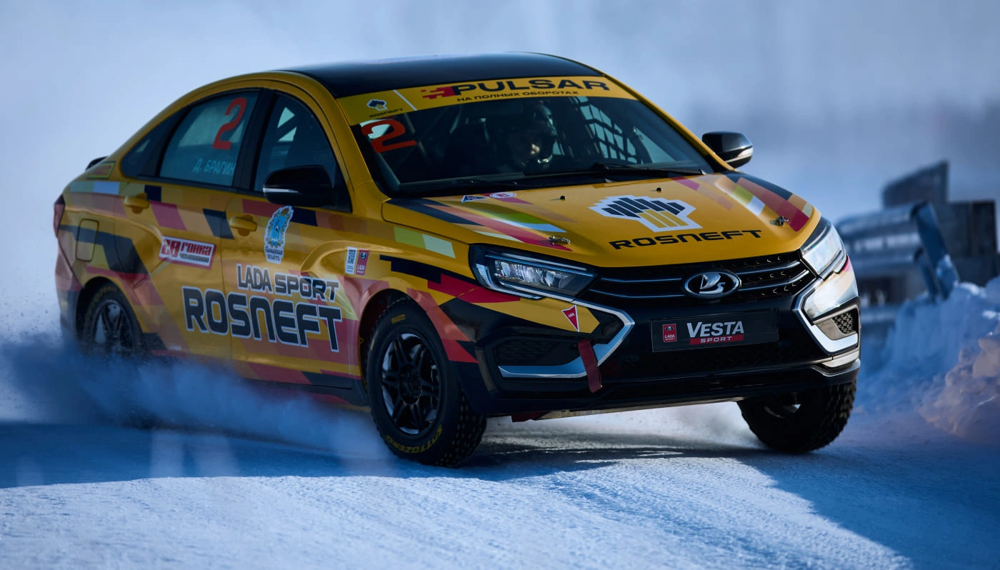
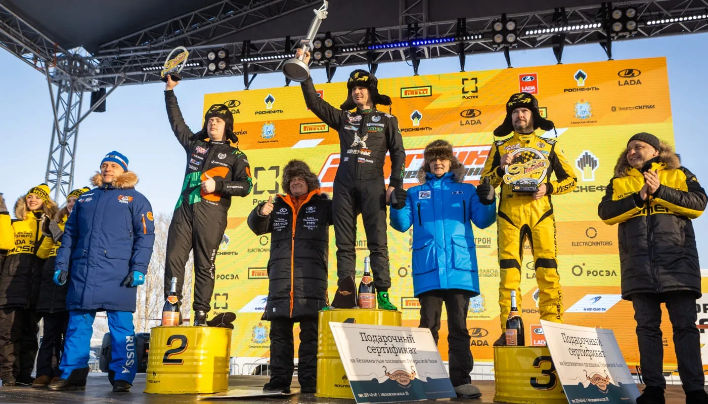

Брагин в погоне за рекордсменом: определился победитель 28 Гонки Чемпионов

Уже в 28 раз на ледовой трассе полигона АО «АВТОВАЗ» в Самарской области прошла Гонка Чемпионов. Уникальные соревнования собрали на одной трассе 16 сильнейших представителей различных автоспортивных дисциплин. Сильнейшим пилотом гонки стал Дмитрий Брагин, который довел количество своих побед на синхронной трассе до 4!
Рекордсменом по количеству завоеванных в Гонке Чемпионов побед является Кирилл Ладыгин, побеждавший здесь аж 9 раз. Но в 2026 году он сумел подняться лишь на 3 ступень пьедестала почета. Причем, об Дмитрия Брагина Кирилл «споткнулся» дважды – сначала в групповом этапе, а потом и в полуфинальной стадии.

Борьба за высшие награды началась еще накануне главного дня соревнований. Тренировочные заезды запомнились прежде всего первой в карьере «крышей» Чемпиона России по дрифту Аркадия Цареградцева. К счастью, ни пилот, ни техника в инциденте не пострадали, и уже на следующий день гоночная LADA Vesta и сам Аркадий Петрович вернулись в борьбу за высокие награды.
Пятничные квалификационные заезды прошли под диктовку «хозяев» площадки, пилоты гоночной команды LADA Sport ROSNEFT традиционно заняли лидирующие позиции. Кирилл Ладыгин стал автором лучшего времени, 2-кратный победитель Гонки Чемпионов Владимир Шешенин показал третий результат. Тольяттинцев разделил разве что Егор Санин – тоже рекордсмен, но по количеству попаданий на подиум Гонки Чемпионов.

Логично, что и в основной день соревнований вся эта тройка претендовала на самые высокие позиции. После групповых этапов определились составы четвертьфиналов. Владимир Шешенин финишировал успешнее чемпиона России по картингу и кольцевым гонкам в зачетной группе «Формула-4» Ярослава Шевырталова, Дмитрий Брагин на классе одолел своего сызранского ученика, двухкратного чемпиона российского Туринга Михаила Симонова. Егор Санин оказался быстрее обладателя Кубка России по кольцевым гонкам в классе «Супер-Продакшн» Леонида Панфилова. А Кирилл Ладыгин лишь 0,13 секунды отыграл у еще одного победителя Гонки Чемпионов прошлого Михаила Митяева. Два полуфинальных заезда дали нам имена финалистов -Брагина и Санина. Тогда как в схватке за «бронзу» соревнований Ладыгин был успешнее своего друга и коллеги Владимира Шешенина.
Если на большей части дистанции соревнований все пилоты использовали автомобили LADA Vesta, получившие перед этой гонкой новые 1,8-литровые двигатели и 5-ступенчатую секвентальную КПП, то финалистам предстояло определить победителя за рулем новинки – гоночной версии модели LADA Iskra. До этого заезда ни Дмитрий Брагин, ни Егор Санин ни разу не садились в этот автомобиль. Тем интереснее получилась дуэль до двух побед. Третьего заезда не понадобилось – оба проезда по трассе ушли в зачет Дмитрия Брагина, который официально стал вторым самым успешным пилотом на Гонке Чемпионов.

Соревнования на полигоне АО «АВТОВАЗ» неизменно собирают тысячи болельщиков из Самарской области и ближайших регионов. Вот и в этот раз, несмотря на 25-градусный мороз, Гонка Чемпионов стала настоящим праздником для них. Помимо спортивной составляющей, желающие могли познакомиться с новинками АВТОВАЗа, сделать фото с уникальными гоночными автомобилями команд LADA SportАвто Финанс и «КАМАЗ-Мастер», выиграть подарки от партнеров и потанцевать под любимые хиты у большой сцены. Гонку Чемпионов можно было увидеть и далеко за пределами Самарской области – в прямом эфире соревнования транслировал телеканал «МАТЧ ТВ!».

С 2015 года генеральным спонсором команды LADA Sport ROSNEFT и Гонки Чемпионов является нефтяная компания «Роснефть». Благодаря этому сотрудничеству рынок получил ряд инновационных продуктов: высокооктановый бензин Pulsar-100 и спортивное гоночное масло Rosneft Magnum Racing. С 2021 года команда LADA Sport ROSNEFT использует именно это спортивное моторное масло, которое позволяет в экстремальных условиях работы обеспечивать повышенную защиту двигателя и добиваться успехов на трассе. Технологии, испытанные в жестких условиях автоспорта, доступны всем автомобилистам - топливо Pulsar и масло Magnum Racing можно приобрести на АЗК «Роснефть».